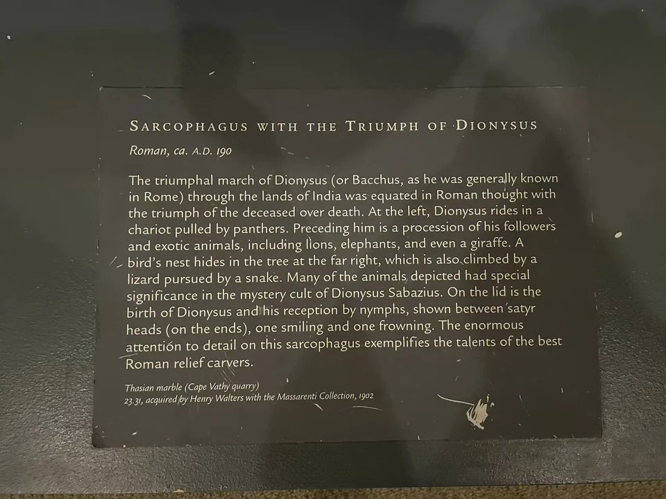

ROMAN SARCOPHAGI / R19
狄俄尼索斯凯旋石棺
酒神在队伍左端，整幅浮雕的热闹随人物与动物向右延伸。

- 年代
- 约190年
- 材料
- 塔索斯大理石
- 收藏
- 沃尔特斯艺术博物馆
- 观看地点
- 沃尔特斯艺术博物馆 · 巴尔的摩
- 馆藏号
- 23.31
从豹车到树梢
左侧狄俄尼索斯乘豹车，人物与动物接连穿过画面。沃尔特斯目录辨认出狮、象和长颈鹿，并指出右端树上还有鸟巢、追逐蜥蜴的蛇。这些小动物的辨认依据馆方目录；现场全景更便于看队伍怎样沿石面展开。 [25]
棺身与棺盖的两个阶段
棺身讲印度凯旋，棺盖则据馆方表现酒神出生及宁芙迎接，两端以不同表情的萨堤尔头像收束。馆方把凯旋联系到战胜死亡的寓意；这是对葬礼图像的解释，未必能还原墓主全部信仰。作品1902年进入Henry Walters收藏，后来随其遗赠入馆。 [25]
现场展签 · 1张

资料与来源
断代、收藏与文献说明
塔索斯是石材来源，不直接等于雕刻工坊所在地。官网发现地字段与来源叙述措辞不一，具体墓址不作精确定位。 [25]